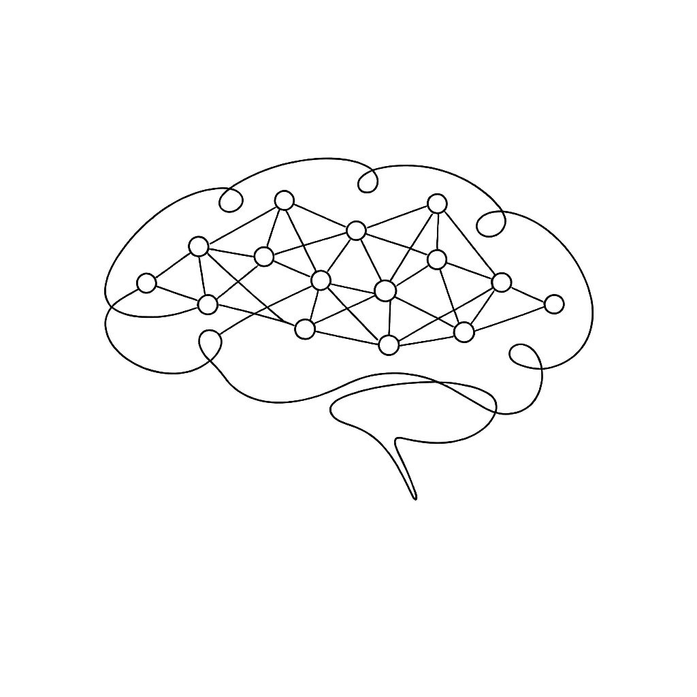
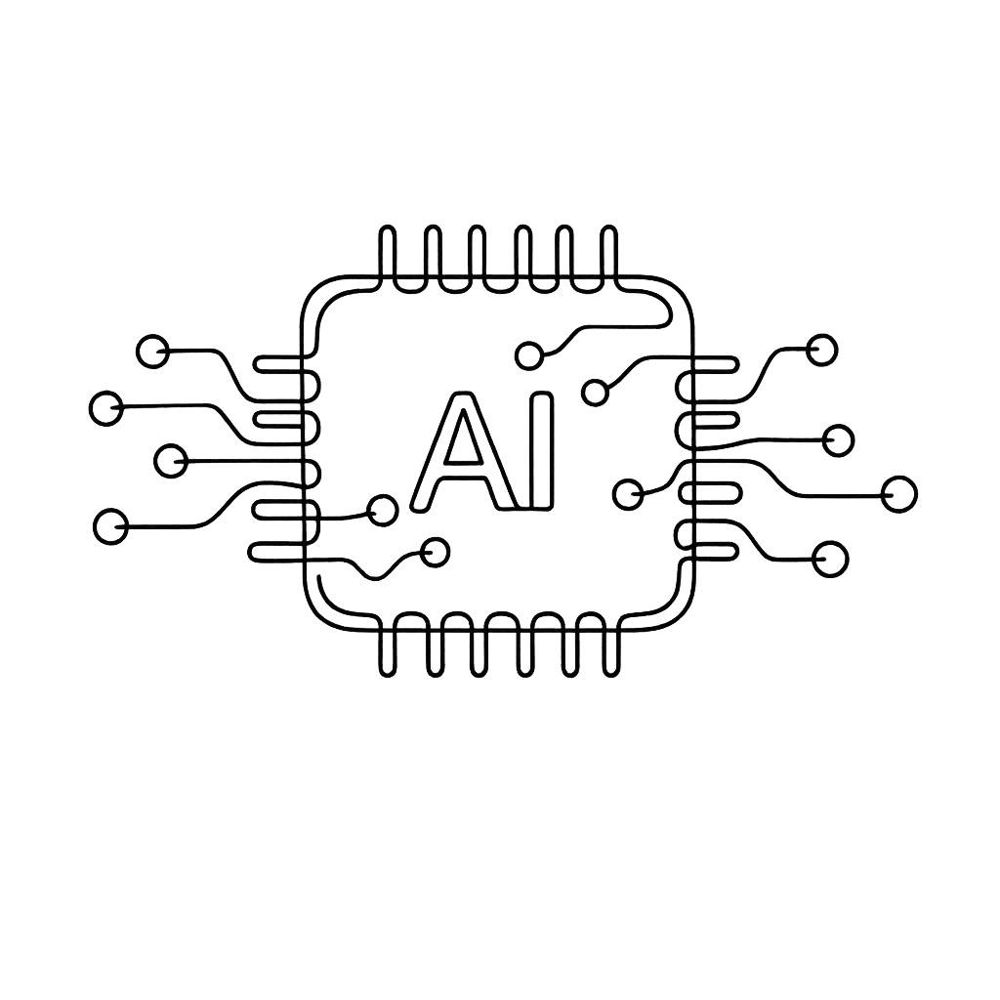
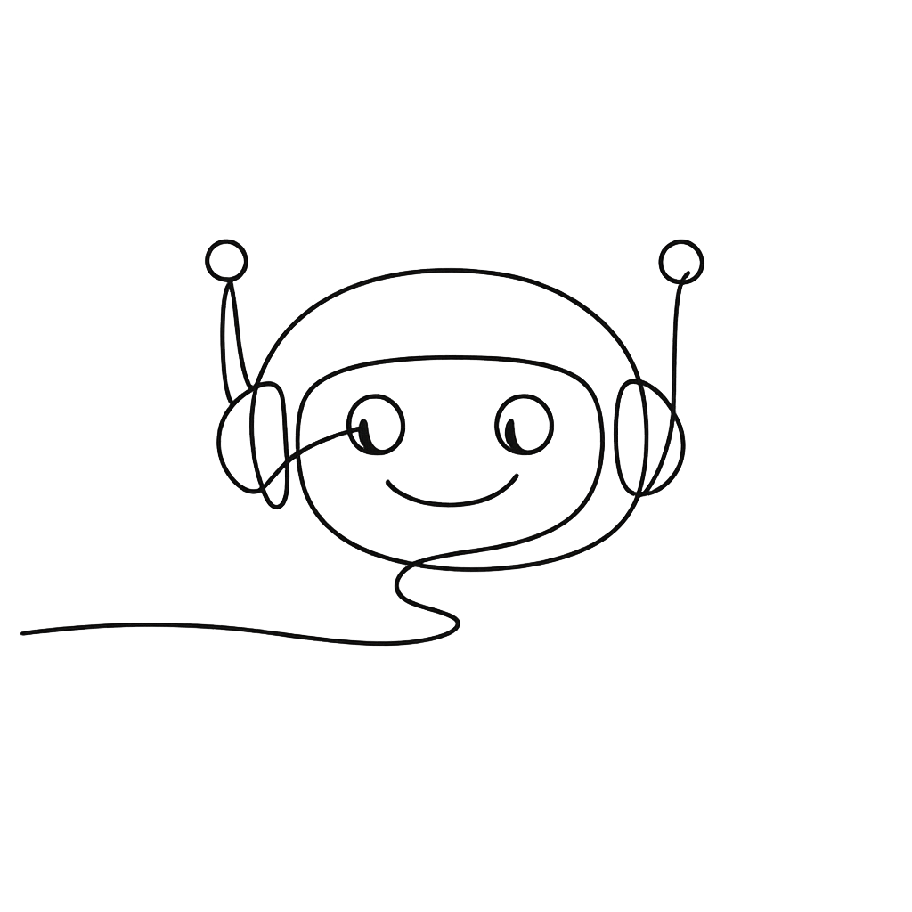
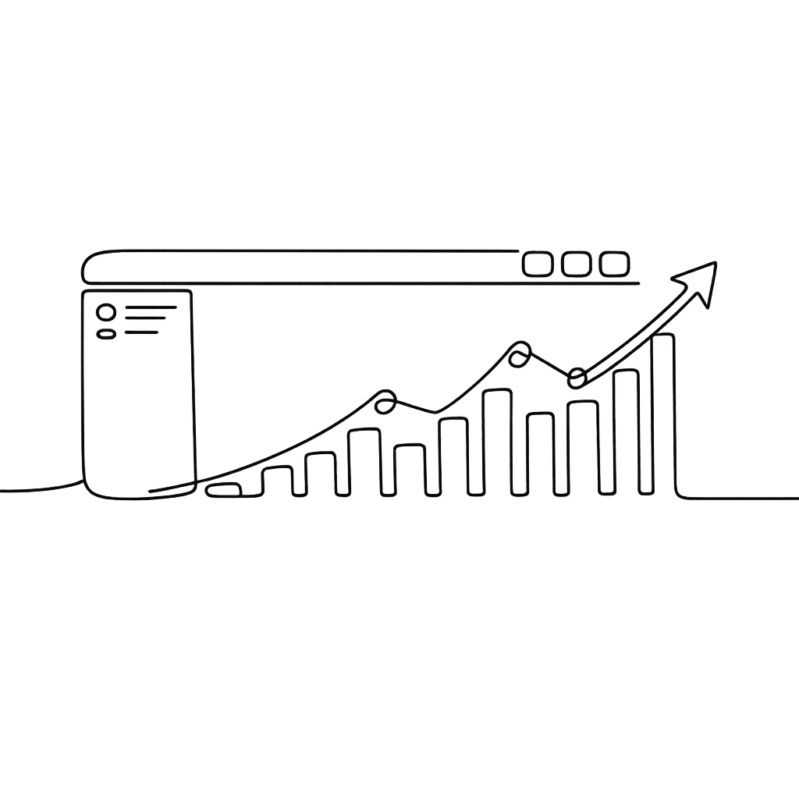
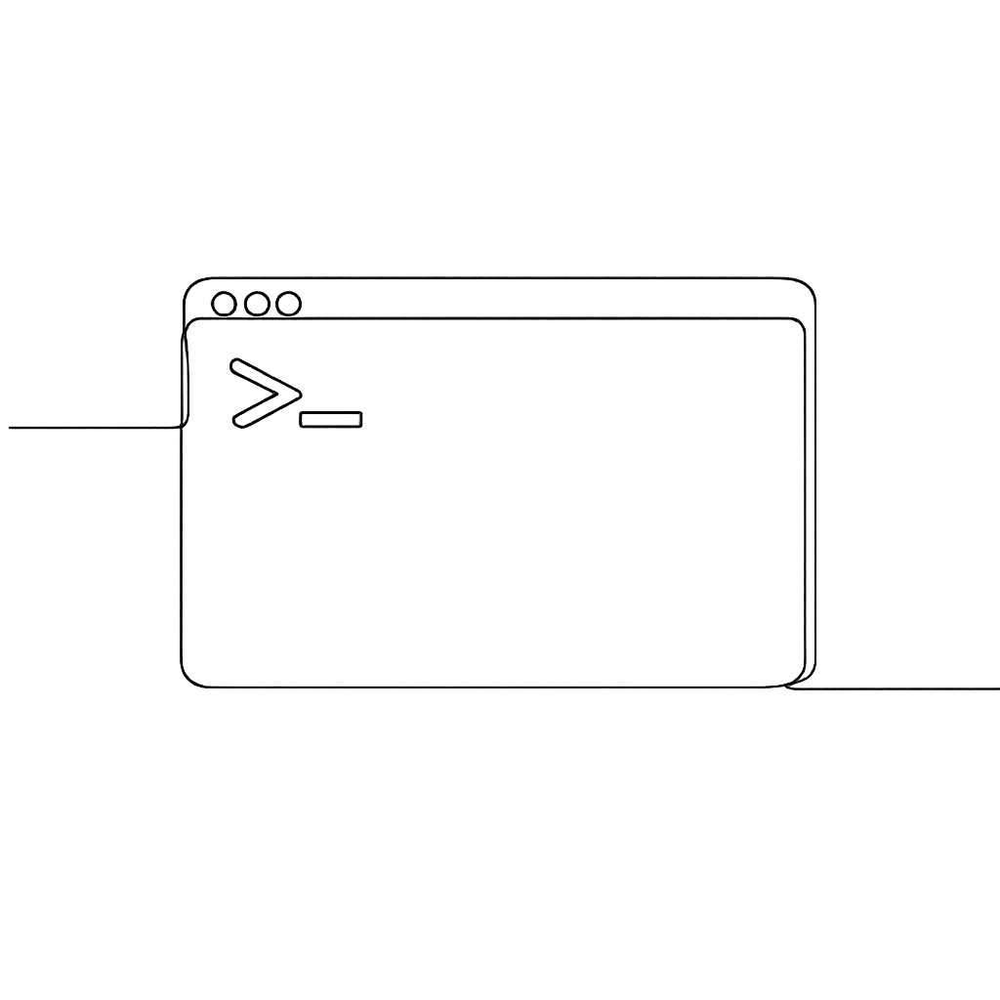

沪公网安备31010402010179号
沪ICP备2023003282号-38
沪公网安备31010402010179号
沪ICP备2023003282号-38





AI行业能来多事之秋：OpenAI承认Sora每天烋掉百万美元却用户腰斩，最终壯士斢腐关停。Anthropic Claude Mythos泄密文档曝光，性能号章史上最强；GPT-5.4百万Token上下文窗口即将落地。国内方面，阿里Qwen3.5-Omni以十分之一价格函掌“Gemini-3.1 Pro，Ai2美国开源最后旗品倒下——技术竞赛、商业博弈与监管冲突三条主线正在加速合流。
A turbulent week: OpenAI shuts down Sora burning $1M/day with halved users; Anthropic leaked Claude Mythos promises the most powerful model ever; GPT-5.4 million-token context incoming. Domestically, Alibaba Qwen3.5-Omni beats Gemini-3.1 Pro at 1/10th price; Ai2, the last US open-source banner, falls. Technology competition, business strategy and regulatory conflict converging at speed.
要点：Sora巅峰期约100万用户，随即跌至50万且从未恢复；每天运营成本约100万美元；OpenAI将算力重新分配给编程、企业和Agent产品；Sora应用将于4月关停，API于9月跟进。
Key Points: Sora peaked at ~1M users, then dropped to 500K and never recovered; burning ~$1M/day; OpenAI redirecting compute to coding, enterprise and Agent products; Sora app shuts down April, API follows September.
洞察：Sora的失败不是技术失败，而是产品市场契合度的失败。在Runway等竞品冲击下，高成本与低留存暴露了OpenAI在消费者产品上的短板。这次关停标志着AI视频生成从概念验证进入商业生存的新阶段。
Insight: Sora failure was not technological but product-market fit. Against Runway, high costs and low retention exposed OpenAI weakness in consumer products. The shutdown signals AI video generation has entered a new commercial survival phase beyond proof-of-concept.
要点：Anthropic内容管理系统配置错误导致约3000份内部文档外泄；新模型代号Claude Mythos，被称为有史以来最强大的模型；在编程、学术推理和网络安全基准测试中大幅超越Claude Opus 4.6。
Key Points: Anthropic CMS misconfiguration exposed ~3,000 internal documents; new model codenamed Claude Mythos described as most powerful ever built; dramatically outperforms Opus 4.6 on coding, academic reasoning and cybersecurity benchmarks.
洞察：这次泄密或许是Anthropic有意为之的软发布——在正式发布前测试市场反应。Claude Mythos若如期推出，将重新定义大模型竞争格局，但其天价服务成本意味着只有大型企业客户才能率先使用。
Insight: The leak may have been a deliberate soft launch to gauge market response. If Claude Mythos launches as described, it will redefine the LLM competitive landscape — but its extremely expensive serving cost means only large enterprise clients will access it first.
要点：Microsoft推出Model Council功能，用户可横向对比不同AI模型的回答；Researcher工具新增Critique模式，一个AI写草稿、另一个AI审查；整合Anthropic和OpenAI模型，号称在深度研究任务上超越Perplexity 7个百分点。
Key Points: Microsoft launches Model Council comparing AI answers side-by-side; Researcher gets Critique mode where one AI writes drafts and another reviews; pulls from Anthropic and OpenAI, outperforming Perplexity by 7 points on deep research.
洞察：双AI评审机制揭示了一个趋势：当单一模型无法保证质量时，AI批AI成为提升可靠性的新路径。这也意味着Anthropic和OpenAI在企业市场的竞争正在Microsoft平台上以另一种形式持续。
Insight: The dual-AI review reveals a new reliability path when single models cannot guarantee quality. It also means the Anthropic vs OpenAI enterprise competition is continuing in a new form on Microsoft platform.
要点：美国国防部将Anthropic认定为军事承包商，威胁其非军事用途AI的商业模式；Anthropic正式起诉国防部；超过30名OpenAI和Google DeepMind员工签署请愿书公开支持Anthropic。
Key Points: The US DOD labeled Anthropic a military contractor, threatening its non-military AI business model; Anthropic filed suit; 30+ OpenAI and Google DeepMind employees signed petitions supporting Anthropic.
洞察：这是AI行业首次出现跨公司员工联合支持同一立场的标志性事件。Anthropic坚持AI安全优先的立场正在获得越来越多科技从业者的认同，但也意味着它与政府机构的博弈已进入实质性阶段。
Insight: This is a landmark event where cross-company employees united for the same cause. Anthropic AI safety first stance is gaining认同 among tech workers, but it also means its showdown with government agencies has entered a substantive stage.
要点：OpenAI即将推出GPT-5.4，据报引入100万Token上下文窗口和极限推理模式；Claude Mythos泄密文档同时透露OpenAI正在准备代号Spud的新模型，已完成预训练。
Key Points: OpenAI upcoming GPT-5.4 reportedly introduces 1-million-token context and extreme reasoning mode; Claude Mythos leak also revealed OpenAI preparing codenamed Spud, pretraining already complete.
洞察：百万Token上下文意味着AI可以一次性处理整本书籍、全部代码库或数百份长文档。这是从助手向专业工具转变的核心支撑，也是Agent时代基础设施竞争白热化的标志。
Insight: A million-token context means AI can process entire books, full codebases or hundreds of documents in one pass — the core support for the shift from assistant to professional tool, and a marker of infrastructure competition heating up for the Agent era.
要点：阿里于3月30日发布Qwen3.5-Omni，在音视频理解、识别、交互等215项任务中取得SOTA，超越Gemini-3.1 Pro；支持113种语言和方言识别；每百万Tokens输入不到0.8元，约为Gemini的十分之一。
Key Points: Alibaba released Qwen3.5-Omni on March 30, achieving SOTA on 215 audio/video/voice tasks, outperforming Gemini-3.1 Pro; supports 113 languages/dialects; priced at less than 0.8 yuan per million tokens, roughly 1/10th of Gemini cost.
洞察：Qwen3.5-Omni是中国在多模态领域的实质性突破。价格优势加性能领先的双重组合正在重塑全球AI多模态市场格局，标志着中国AI企业从追赶者向定义者的身份转变。
Insight: Qwen3.5-Omni is a substantial breakthrough for China in multimodal AI. The combination of price advantage and leading performance is reshaping the global multimodal market, marking a shift from follower to standard-setter for Chinese AI companies.
要点：DeepSeek网页版于3月29日静默升级后宕机超过11小时；模型自我介绍已改为DeepSeek-V3，知识截止日期推断延至2026年1月；上周同时开启17个Agent方向岗位，被认为是下一代模型发布的前兆。
Key Points: DeepSeek web version silently upgraded on March 29, followed by 11+ hour outage; model now identifies as DeepSeek-V3 with knowledge cutoff extending to January 2026; 17 Agent-related jobs posted last week, fueling V4 speculation.
洞察：DeepSeek的静默升级模式已成为其品牌文化——不预告、不公告，用产品说话。11小时的宕机反而成为最好的营销，让用户主动参与推理新模型版本的乐趣中，体现了AI时代用户与产品全新的互动关系。
Insight: DeepSeek silent upgrade has become its brand — no announcements, just product. The 11-hour crash became the best marketing, engaging users in deducing the new model version, showcasing a new kind of interaction between AI products and users.
要点：Meta研究团队发布Hyperagents论文，结合哥德尔机思想与达尔文开放算法，实现AI持续自我迭代；在SWE-bench上性能从20.0%自动提升至50.0%；论文已被ICLR 2026接收；第一作者Jenny Zhang为华人实习生。
Key Points: Meta published Hyperagents paper combining Gödel Machine theory with Darwinian algorithms for AI self-improvement; on SWE-bench, performance auto-improved from 20.0% to 50.0%; accepted at ICLR 2026; lead author Jenny Zhang is a Chinese-Canadian intern.
洞察：从会学习到会改进自己的学习方式，这是AI能力的重大飞跃。Hyperagents表明AI的自我迭代可以深入到底层学习逻辑本身——这或许是通向AGI的关键一步，也意味着AI自我改进能力正在从理论走向实证。
Insight: The shift from can learn to can improve how it learns is a significant leap. Hyperagents shows AI self-iteration at the meta-learning level — potentially a crucial step toward AGI, marking the shift from theory to empirical evidence for AI self-improvement.
要点：艾伦人工智能研究所削减开源模型OLMo开发资金，核心团队几乎全部加入微软超级智能团队；前CEO、COO及OLMo项目联合负责人集体出走；资助方策略转变，倾向于AI应用而非开源基础模型。
Key Points: AI2 cuts OLMo open-source funding; core team almost entirely joins Microsoft Super Intelligence team; former CEO, COO and OLMo co-lead among those departing; funder shifts strategy toward AI applications over open-source base models.
洞察：Ai2的陨落标志着美国非营利AI研究模式的结构性困境：当OpenAI、谷歌们投入数百亿美元时，非营利组织难以维持竞争。这也意味着中国开源模型将更容易获得全球市场份额——MIT报告显示中国开源模型全球下载量已达17.1%，首次超越美国。
Insight: AI2 fall marks the structural dilemma of US nonprofit AI research: when OpenAI and Google spend billions, nonprofits cannot compete. This means Chinese open-source models will more easily gain global market share — MIT reports Chinese open-source downloads at 17.1%, first overtaking the US.
要点：极佳科技发布GigaWorld-1，在WorldArena榜单综合得分突破60分登顶全球第一；3D准确度近满分，物理遵循能力相比第二名提升16%；已开源核心代码，半个月内HuggingFace下载量突破16000次。
Key Points: Jijia Technology released GigaWorld-1, topping WorldArena global rankings with composite score exceeding 60; near-perfect 3D accuracy, physics adherence 16% ahead of second place; core code open-sourced, 16000+ HuggingFace downloads in half a month.
洞察：世界模型是具身AI的核心基础设施，GigaWorld-1的突破意味着中国在物理世界模拟能力上占据了先机。在机器人、自动驾驶等需要真实物理交互的领域，世界模型的优势将转化为真实的商业竞争力。
Insight: World models are core infrastructure for embodied AI; GigaWorld-1 breakthrough means China has seized the initiative in physical world simulation. In robotics and autonomous driving requiring real physical interaction, world model advantages will translate into genuine commercial competitiveness.
沪公网安备31010402010179号
沪ICP备2023003282号-38